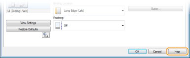
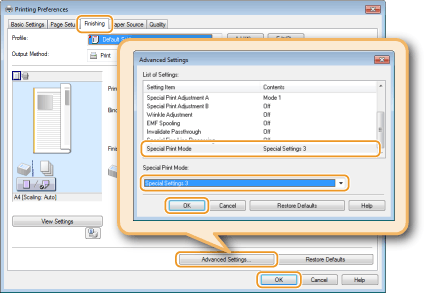

Printing
You can print documents made with applications on your computer by using the printer driver. There are useful settings in the printer driver, such as enlarging/reducing and poster printing, that enable you to print your documents in various ways. Before you can use these functions, you need to install the printer driver on your computer and complete some other preparations. For details, see Printer Driver Installation Guide.
|
|
|
Depending on the operating system and the type or version of the printer driver you are using, the printer driver screens in this manual may differ from your screens.
|
|
TIPS
|
||||||
Displaying the printer driver helpClicking [Help] on the printer driver screen displays the Help screen. On this screen, you can see detailed descriptions that are not in the e-Manual.
 Printing silentlyIf you mind the printing noise, you can reduce the noise by specifying the quiet mode. Note that If you print in the quiet mode, printing becomes slower.
* The quiet mode is enabled only when the following conditions are both satisfied.
The size of paper that is used is A4, Legal, Letter, or custom paper size of width 7.48 in. (190.0 mm) or more and length 10.69 in. (271.4 mm) or more.
[Paper Type] is set to [Plain] or [Plain L]. Basic Print Operations
 Always printing in the quiet mode Always printing in the quiet mode You can set the machine to the quiet mode so that the machine always prints in the quiet mode. Change machine settings in the Printer Status Window.
Printing in the quiet mode only for specific printingSpecify the quiet mode in the printer driver when making print settings. For basic printing using the printer driver, see Basic Print Operations.
[Finishing] tab
 |
 in the system tray.
in the system tray.